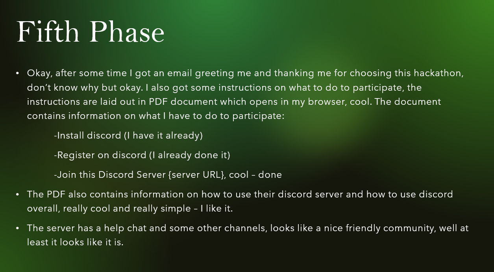
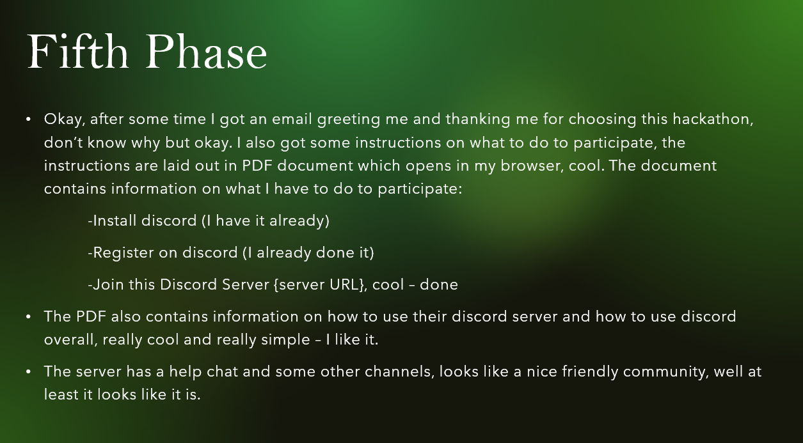

Introduction

Hello fellow programmers and tech enthusiasts, I welcome you on my very first guide to Human Program Hackathons, here you will find a great source of information on how to get started working on your very OWN human program for hackathons, ready? Let’s GO!
So, lets start off with the basics, what do we consider as human programs, how can human programs be defined? Well, it is really easy. Human Programs, basically take the role of a human manager, who gives tasks out to individuals and then requests for some sorts of a response from them to confirm that the task has indeed have been done. Sounds simple right? Well, it can get quite complicated as we dig deeper into the concept, but don’t worry, with this guide you will get your head around it very quickly!
Some key notes to remember when working on a human program:
- The human program only gives out tasks / receives a response from the user and/or checks if the task has been done.
- The human program does not escalate users’ roles, the human program assumes that the users dealing with the system are not skilled at the craft/task that will be set by the program.
- The human program does not do any work / only in some niche cases checks for the completion of the tasks, instead the human program dynamically assigns tasks to the users to reach a set goal of the program or to survive / keep going.
- The human program is designed in a way to work as a SATNAV system for a car, where if the driver (user) does not take the first turn provided (does not do the task), the human program dynamically adjusts to make sure that the goal is reached no matter what.
- The human program should be treated like a human manager with infinite patience.
So, now we have a basic idea of what a human program is, what it does and what are the key components of a human program, time to make some use out of it!
As a student, I was assigned a task to create a human program that runs hackathons, sounds awesome right? Yes, this would sound even cooler if I told you that it doesn’t have to be a hackathon at all, it can be any event you can think of! A meetup for a group of students to get to know each other better? A party? A trip? Endless possibilities!
For now, I shall focus on how YOU can get started on creating a human program to run hackathon events for other people just like you.
What work has been done and what am I working on??
At this point in time, I have done a substantial amount of work, mostly research and experimenting with different pieces of technology, but there are things that you can have a look at and get a huge insight into how the goal of running human program hackathons can be achieved.
Let’s first break down my thought process and what the current state of things is:
At this point I have created a website on pythonanywhere.com, which has a small capture form for an email address, first name and last name of the user. This data is captured into a JSON file, which is then read, and another script sends emails to the email address provided by the user.
A full guide on how to create your own capture form and a mailer script can be viewed here:
https://maksimlozovskii.pythonanywhere.com/
So, why is this important? Well, a huge part of the human program is to get in touch with humans, this can be done via any means that you can think of, for the sake of simplicity, I used an SMTP server library which sends text-based emails to the provided email address. Later, it would be a really good idea to add other means of communication, such as telephone, social media, discord, WhatsApp, telegram, you name it, from which the human program can choose and try to get in contact with the user, if other means were not useful.
In my opinion, my decision on re-creating a wheel were dumb, it would be a lot better to use existing software to tackle such task, at the end of the day, we do not want to write software for evert task case that human program may give out, right? We will come back to this discussion later.
Now, as we have means to get into contact with the user, we now need to decide on what to send to the user, this is where it gets complicated.
Human program instruction sets
In their nature, human programs have a very distinguishable feature, which is also a key to their implementation. The human program gives out instructions to its users, who in turn do the work, humans being the driving force are required to follow the correct steps for the system goal to be achieved, in this case, the hackathon event. So, how can we make sure that the “humans” do the correct tasks that are impactful for the system? The answer is – we create instruction sets!
Computer architectures are based on “instruction sets” which define their functionality, users input commands into the computer, which then does work for the user, why can’t we do it the other way?
So, I decided that creating an instruction set for a particular task that users with any background can easily follow, would be the ultimate goal of this project. After looking at Kaggle and other websites that have a step-by-step guide to learning a skill (such as programming), I have made up a number of key aspects that the instruction set must have in order for it to be viable:
- Instructions must be atomic (single purpose) – the instruction is targeted towards completion of a single task; combined instructions are not permitted.
- Instructions must be easy to understand – instructions must be in their simplest form, the lingual structure should be very primitive, all abbreviations or technical terms should either be explained or have a link to their explanation.
- Instructions should not give users ability to choose – users should not have freedom of choice when it comes to instructions, the instructions should be very strict on what exactly must be done, this helps to avoid errors due to user’s incorrect decisions / creativity ( can also be viewed as user escalation as mentioned above) and allows future parameterisation of the instructions at a later stage.
- Instructions sets must be accompanied by visual guides – it is important that the users are shown how to do the task, this helps to avoid misinterpretation due to language intricacies and gives users more courage to do the task as they know exactly what to do.
This approach of creating instructions sets can be viewed as authoritarian and very brittle. Yes, at the start this will be the case, it is in our best interest that users do exactly what they are told, but we all know this will not be the case, there will always be ways for misinterpretations and mistakes due to human error, this is where dynamic instruction sets come in.
Dynamic instruction sets follow the same principle as mentioned above, but they possess a quality of having a sort of polymorphism which depends on the situation that occurs during operation. This type of instruction set is similar to a flowchart, where the set changes or remains the same depending on the feedback that the user provided to the system. This gives the instructions issued by the human program, more of human feel, where the system adapts to user’s preferences to a certain extent, at the end of the day, the human program has infinite patience and does have emotions.
So, what can we take from this?
It is extremely important to have a very well laid out dynamic instructions set, which had an extensive testing history with different parameters (uncontrolled situations / user behaviour / controlled situations)
Clear road map for this project:
To continue with this project and produce viable results at the end, you need to know what goals need to be achieved and what things need to be done. There isn’t a clear roadmap for this project, as we don’t know what we don’t know, but I can give you a solid foundation based on my work to grant you the ability to continue this work for me or alongside me. So, what are the goals / core points that need to be achieved/made/completed to call this project a success? I will break these into core points/aspects that are core to any human program and to case specific points.
Core points for any human program:
- First, you need to have a solid, extensively tested dynamic instruction set that had run through both simulated tests in a controlled environment and out in a commercial environment. The instruction set should not feel like a brittle collection of tasks that must be followed only a certain way.
- A way to reliably send instructions to the users that are part of the system, preferably this system should be versatile in design enabling its use in other human programs, this portion in my opinion can either be hard coded or glued together using various pieces of available software.
- A way to store interested users. The PYJMAILER is a good combination of the previous point and this point, but it lacks many features which would classify it as viable for use.
- A way to reward users to stay within the system, there should be a mechanism to keep users engaged with the system, preferably users should be able to do tasks for different system in parallel.
More case-specific points:
- The instruction set should have very detailed information on what tech will be used, how to use it and how to access it, accompanied by visual guides and external resources.
- The instruction set should have a way to address issues that may arise during the event, such as having a discord channel with a chat bot for help tips.
- There should be a way to judge user’s work and give some sort of credit / points depending on the quality of work.
- There should be a way to come up with a theme for the hackathon, assign users or find it online.
Here is a more visual road map of the project:
A lot to take in right? Don’t worry, we will figure it out!
Testing documents and notes
To do this, I started creating something like user stories in power point to detail the way the normal user would interact with the system. This gave me a huge insight into how to design a hackathon in a way that would be interesting to a normal user, yes, in later iterations it is necessary to start thinking about the incompliant users and possible unexpected events which may occur, but first focus on the system where the user wants to do what he is told and does not want to break the system, then start thinking about other cases. I have also used FIGMA to create some mock-ups of how the user will register onto the event and what he/she will see when participating, its not finished, think about this really carefully, this should also be done for the unexpected events.
As part of the project, I have been provided a very nice roadmap of what has to be done for the project, have a look:
- A Powerpoint that describes a first pass design with a passive keen to help audience
- One or more point of view powerpoints that explicitly clarifies what messages and choices a user receives. The goal with these is to ensure that each message can be understood without any need for additional clarification (which can’t be provided by the human program)
- A ‘testing’ powerpoint that explores various problems that might occur at different stages in the program and how the human program might become aware of the problems and what it might do to address them.
- Then the development of an initial coding implementation of the human program
- Then a simulated interface where users can pretend to be a group of people interacting over time and can give feedback on how they feel, what problems might occur, any changes to the instructions or choices that they are given.
- Test with possible users via the simulation
- Test with a real project
These are applicable to any project, and you should keep this in mind when working on this project. At this point in time, I am at the 2nd stage.
Example of what the power point could look like:
 

You can download the power point presentation here: Download
As for other pieces of software, it is important to carry out both UNIT and system testing, lay these out in an excel document.
More on hackathons and related instuciton sets
At this point in time, I don't have any valid isntuciton sets that would work for the task, but I do have some ideas that could really help you in figuring out a way to create an instruction set that will work perfectly.
- So, to start off, the hackathon event that I am working with is online based;
- The platform for the event is discord;
- The organising team will have to organise a time slot;
- The organising team will have to write a welcoming speech and a event closing speech;
- The users will have to attend the event and do the task at the provided time slot;
- The users will have to complete the provided task and submit it to discord which can (in theory) have a web hook to a github account
- The users will have to follow a set of rules in order for the event to be fair
So, how am I imagining the whole event algorithm?
- The organising team registers
- The participants register
- The organising team downloads discord + responds to the human program
- The organising team registers on discord + responds to the human program
- The organising team creates a discord server using the provided specification + responds to the human program
- TASK FOR THE HACKATHON IS PROVIDED
- The participants download discord + respond to the human program
- The participants register on discord + respond to the human program
- The organising team shares the discord server link with participants + responds to the human program
- The participants join the discord server + respond to the human program
- The participants follow the steps on the discord server + respond to the human program
- The participants now have access to all necessary information + respond to the human program
- The organising team then writes the welcoming speech by provided specification + responds to the human program
- The organising team then writes the closing speech by provided specification + responds to the human program
- The organising team then arranges a time slot for the event + responds to the human program
- The participants read the time slot and react to it + respond to the human program
- Day before the event start, the organising team emails the participants + responds to the human program
- On the day of the event, the participants join the outlined discord channel
- The organising team read out the welcoming speech + responds to the human program
- The organising team read out the rules + responds to the human program
- The organising team then provides access to the task data to the participants + responds to the human program
- The participants do the task under a time limit
- The participants submit work + respond to the human program
- The organising team then reads out the closing speech + responds to the human program
- JUDGEMENT FOR THE HACKATHON SUBMISSIONS IS PROVIDED
- ALL USERS ARE REWARDED
There is a lot of information missing, particularly about the specifications, the task, the judgement process and the rewarding process.
This is because at this point, they don't really matter, but they are part of the final system, so they need to be taken into consideration, at this point I don't really have any ideas for them.
Examples of my Website made in Figma
Final words
At the start of creating this blog post, I have been approached with a very interesting question – “How much time will this work save the person who follows after you?” – “More than necessary to get this done” I said.
Good luck!
About Me
Close representation of what I look like
My name is Maksim Lozovskii, I am a first year Computer Science student at Queen’s University Belfast, a proud QLAB member and an obsessed programmer.
Some Useful Resources to look at: